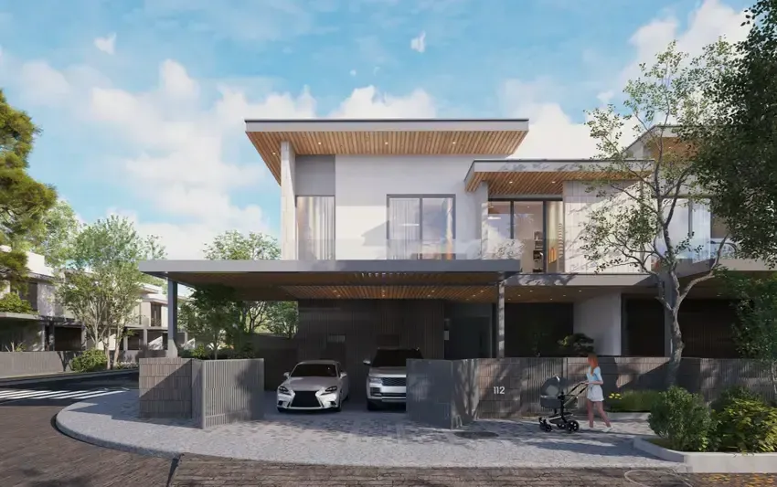
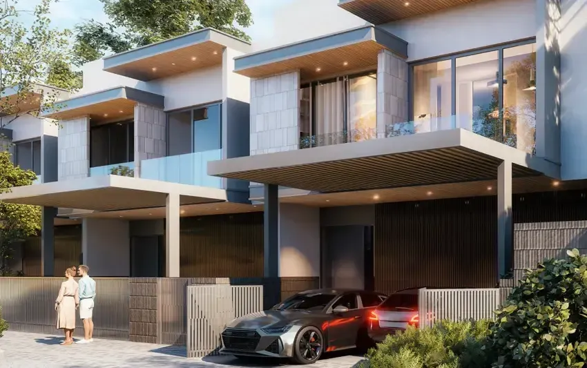
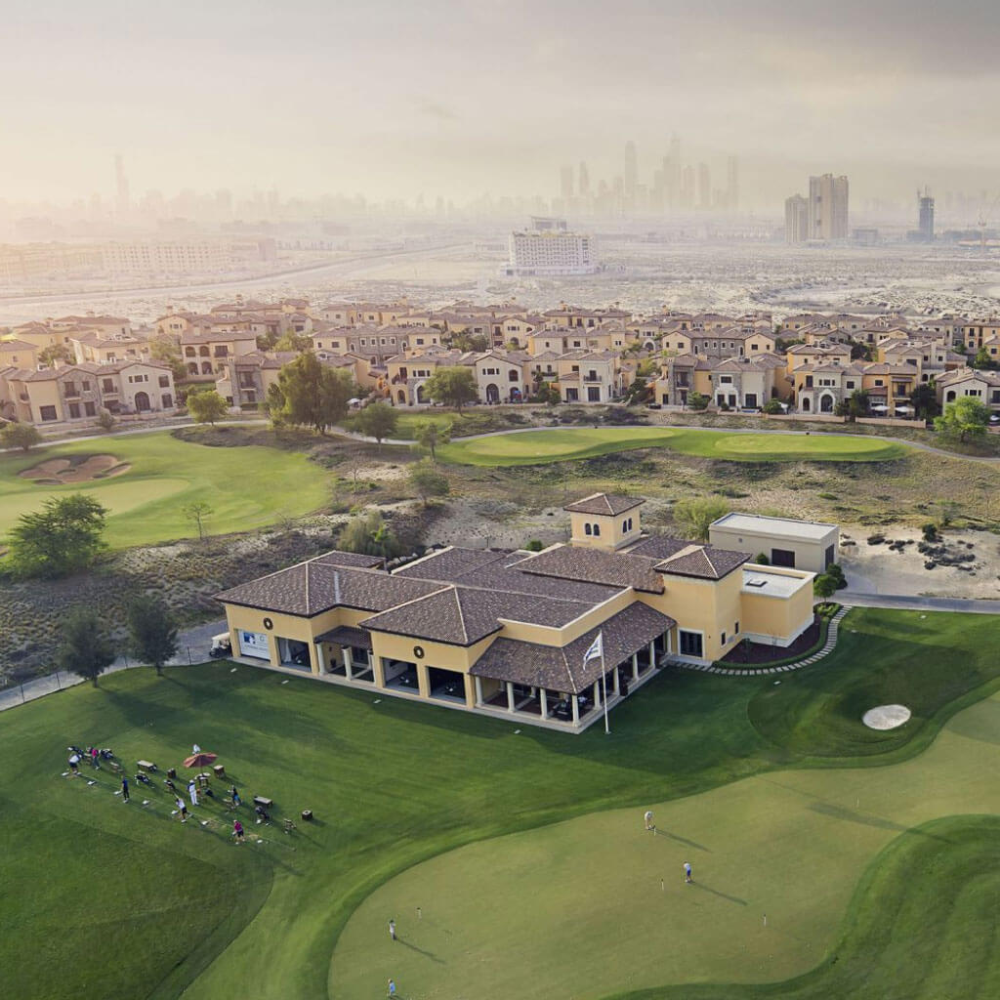

An Extension of an Already Established Golf Community
The Next Chapter JGE 2.0 is Wasl Properties' new masterplan built onto the existing footprint of Jumeirah Golf Estates, one of Dubai's longest running and most recognised golf communities. Rather than launching a standalone development, this phase extends a neighbourhood that already has a track record, mature landscaping, and an international reputation built over more than a decade.
Spread across roughly 4.6 million square metres, the new phase is organised into six distinct districts, each built around a different lifestyle focus, from golf frontage living to equestrian pursuits, wellness and family amenity space.
What's Being Built


Community Amenities
- Golf-facing villas with uninterrupted course views across the existing Earth and Fire courses
- A landscaped Central Park spanning over 122,000 square metres with family and green recreation zones
- Multi-sport facilities including the tennis stadium and dedicated fitness trails
- An equestrian district offering riding paths, stables and polo grounds
- Walkable retail and dining hubs woven through the residential zones
- On-site healthcare and education, including clinics, nurseries and land set aside for an international school
- Mosques, shaded walkways and dedicated cycling lanes throughout the community
Location & Connectivity
Sitting near Sheikh Mohammed Bin Zayed Road, the community offers fast car access to Dubai's key business and lifestyle districts. Approximate drive times from The Next Chapter JGE 2.0 include:
| Dubai Marina | 20 minutes |
| Downtown Dubai | 25 minutes |
| Expo City Dubai | 15 minutes |
| Al Maktoum International Airport | 25 minutes |
| Dubai International Airport (DXB) | 30 minutes |
The development sits within walking distance of the existing Jumeirah Golf Estates Metro Station, with a future Etihad Rail stop planned nearby. Internally, the masterplan is designed around walkability, with shaded footpaths and cycling lanes connecting the six districts.
Indicative Payment Plan
| Stage | Payment |
|---|---|
| On booking | To be confirmed at launch |
| During construction | To be confirmed at launch |
| On handover | To be confirmed at launch |
Official payment plan details had not yet been released by Wasl Properties at the time of writing. Enquire below and we'll confirm the exact structure with you directly once released.
About Jumeirah Golf Estates

Long before The Next Chapter, Jumeirah Golf Estates built its name as one of Dubai's most established master-planned residential communities, known for its mature landscaping and two Greg Norman designed championship courses, Earth and Fire. The community also hosts the DP World Tour Championship each year, keeping it firmly on the international golfing calendar.
The original community is made up of villas, townhouses and low-rise apartments spread across sub-communities including Flame Tree Ridge, Whispering Pines and Al Andalus, supported by a clubhouse with dining, spa and fitness facilities, extensive walking and cycling paths, nearby international schools and its own metro station. The Next Chapter builds directly onto this foundation rather than starting from nothing.
Why This Launch Stands Out as an Investment
Buying into The Next Chapter JGE 2.0 means buying into an extension of a community that already has an established reputation, rather than a speculative new area with no track record. It combines the credibility of an existing golf destination with entirely new infrastructure, transport links and lifestyle amenities layered on top.
Backed by Wasl, a government-owned developer, the project benefits from phased delivery, strong connectivity and destination anchors like the Mandarin Oriental resort that support both liveability and long-term asset value. Inventory in the first release phases is expected to be limited relative to demand, which is typically where early buyers see the strongest position for capital appreciation as the wider masterplan matures.
About Wasl Properties
Wasl Properties is one of Dubai's most established developers, operating under the government-owned Wasl Asset Management Group. With a portfolio of more than 47,000 residential and commercial units, Wasl has played a central role in shaping several of Dubai's key residential and mixed-use districts.
The developer is known for integrated, lifestyle-led communities that combine residential, retail, hospitality and leisure elements. Notable projects include Wasl1 near Zabeel and Dubai Frame, Wasl Gate in Jebel Ali with connectivity to Expo City, and the mid-market communities of Wasl Green Park and Wasl Village. Wasl has also led the redevelopment of heritage areas in Deira and Bur Dubai, and partners with global hospitality brands including Mandarin Oriental and Hyatt on its branded residential and hotel ventures.
That track record of government-backed delivery and long-term community planning is a large part of what underpins confidence in The Next Chapter as it rolls out.
Frequently Asked Questions
What is The Next Chapter JGE 2.0?
It's a new masterplan by Wasl Properties built as an extension of the existing Jumeirah Golf Estates community, adding more than 12,000 residential units across six themed districts.
Who is developing The Next Chapter JGE 2.0?
Wasl Properties, a government-owned developer operating under Wasl Asset Management Group, with a portfolio of over 47,000 units across Dubai.
What amenities will the new masterplan include?
Highlights include a tennis stadium, an equestrian district with riding trails and polo facilities, a Mandarin Oriental resort, a 122,000 square metre central park, and direct access to golf frontage on the existing Earth and Fire courses.
How well connected is the location?
The community sits near Sheikh Mohammed Bin Zayed Road with drive times of roughly 20 to 30 minutes to Dubai Marina, Downtown Dubai, Expo City and both major airports, plus walking access to the existing JGE Metro Station and a planned Etihad Rail stop.
Is the payment plan available yet?
Wasl Properties had not released official payment plan figures at the time of writing. Enquire below and we will send confirmed details as soon as they're released.